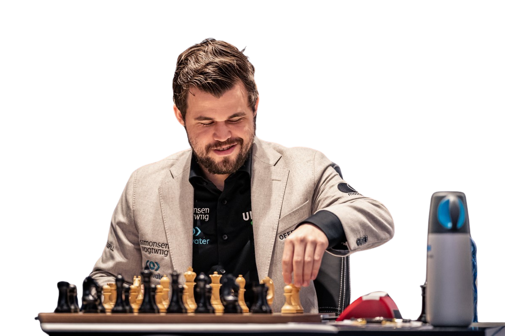

Magnus Carlsen
The guy who crushed a thousand opponents
Magnus Carlsen, born on November 30, 1990, in Tonsberg, Norway, is a chess grandmaster who has left an indelible mark on the world of chess. Widely regarded as one of the greatest chess players of all time, Carlsen's strategic brilliance and unparalleled intuition on the board have earned him the title of World Chess Champion.

Carlsen's journey in the world of chess began at an early age. By the age of 13, he had already achieved the title of Grandmaster, making him one of the youngest ever to attain such a prestigious status. His natural talent, combined with an insatiable appetite for the game, set the stage for a remarkable career.
Achievements:
- World Chess Champion: Magnus Carlsen has held the title of World Chess Champion since 2013, showcasing his dominance in the chess world.
- Grand Slam Winner: Carlsen's list of accomplishments includes victories in prestigious events such as the Grand Slam Chess Final, solidifying his status as a chess legend.
- Highest Chess Rating: With a peak Elo rating that places him among the highest-rated players in history, Carlsen continues to set new standards in the world of competitive chess.
Some people think that if their opponent plays a beautiful game, it's okay to lose. I don't. You have to be merciless.